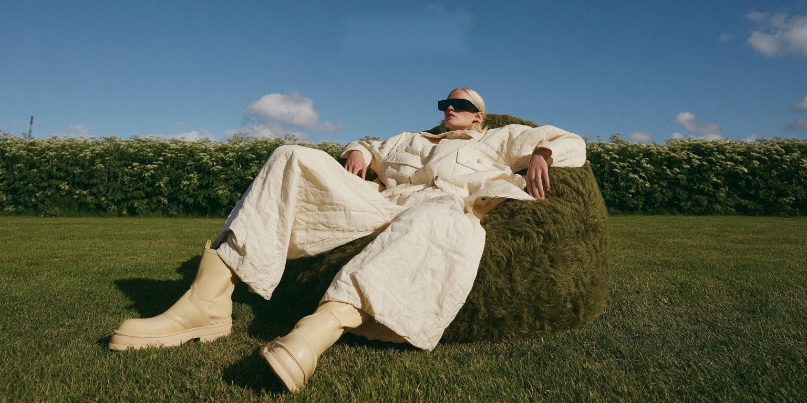
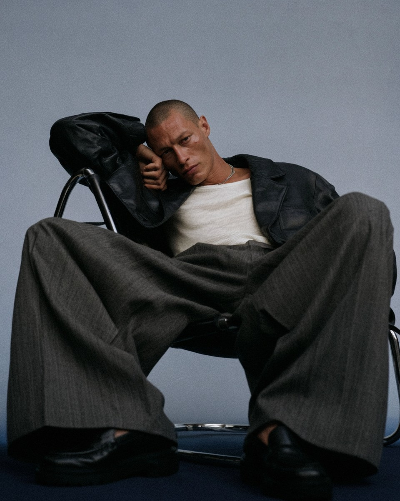
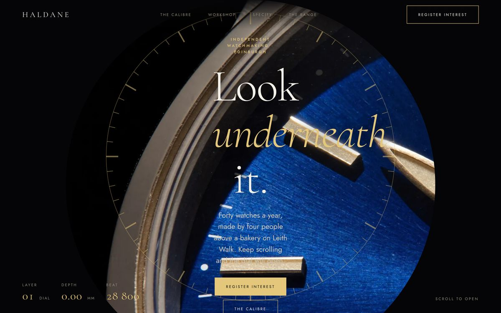
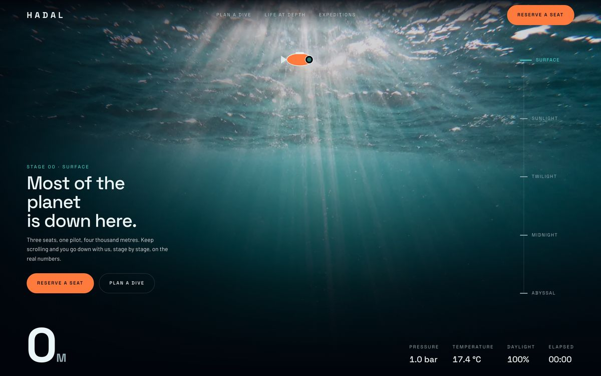
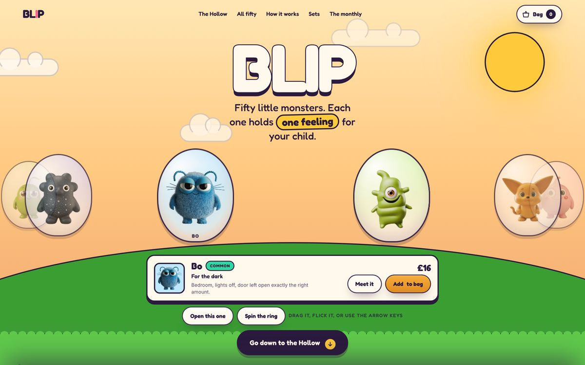
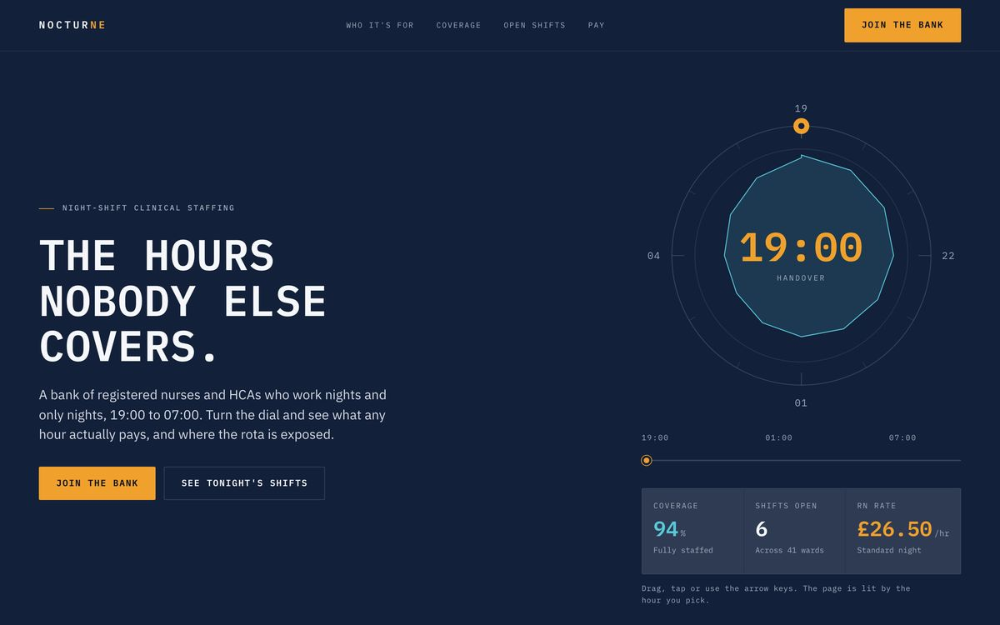
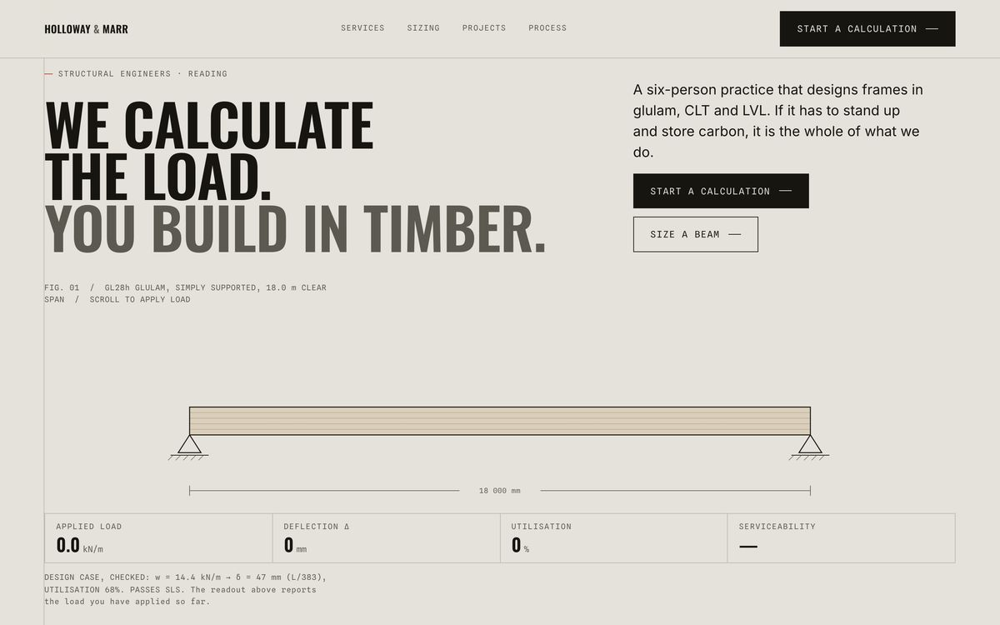
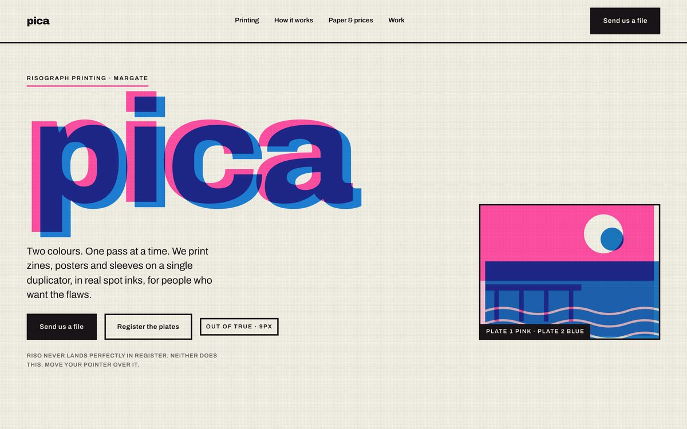
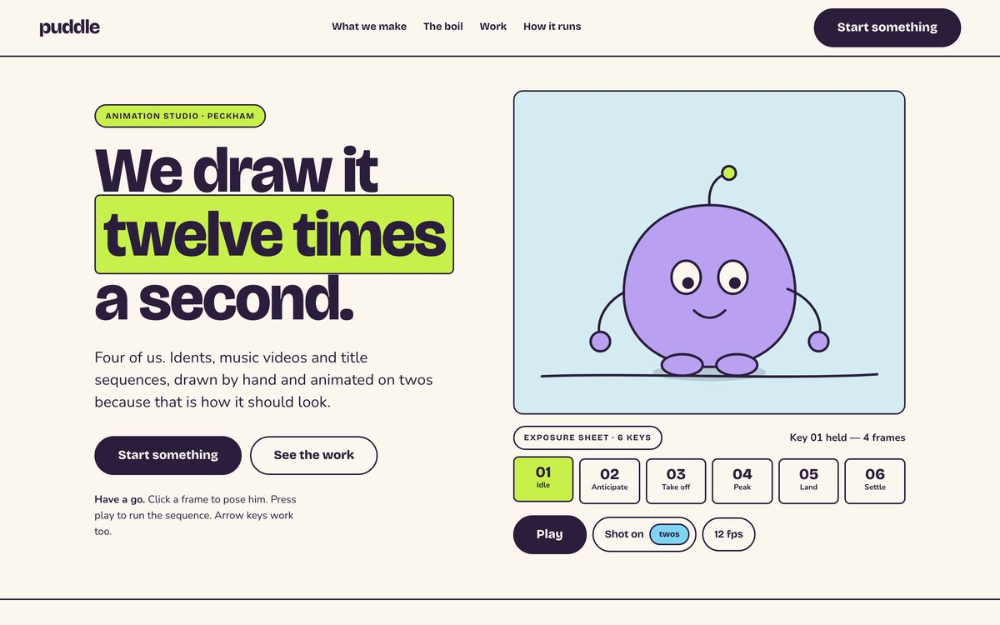
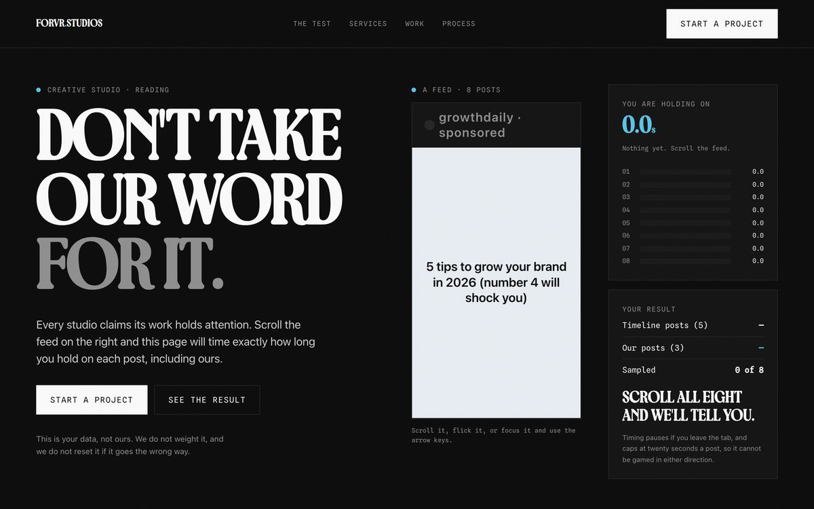

FILM
RELAY
A relay along one concrete wall, three runners, pole wipes on every hand-off, cut to loop back into its own first frame.

Selected work · 2026
Films and stills made this year, spec and commissioned. Every frame directed here, finished by hand.
A relay along one concrete wall, three runners, pole wipes on every hand-off, cut to loop back into its own first frame.
London energy at street level, cast and lit as one continuous evening, built entirely from directed generation.
A perfume remembered on a tube platform. Memory film built from amber light, close texture and one held face.
Garment-first film for a London label. Low angles, hard sun, the product carried by movement rather than captions.

STILLSControlled studio portraiture on a graded sweep. One light, one chair, one grade held across the full set.
 STILLS
STILLSLocation editorial shot as a set, not a series: same light, same world, every frame cut from one concept.
Spec work is labelled spec. Nothing here is a case study we cannot show you the files for, and no numbers are attached to work that has not run.
Design and build
Every one answers the same question a different way: what should this business's site actually do that a template cannot? Each is built around one working interaction, not a slideshow of it.

The Caseback. A circular aperture opens through the dial into the movement, then the escapement, with a balance wheel running at a real 4Hz.

The Descent. Scroll and you sink to 4,000m. The page colour follows the real light-attenuation curve of seawater as pressure and temperature track with you.

The Incubator. A full-bleed ring of pods you drag or flick through. Open the front one and it cracks: the lid tips off and the creature springs out.

The Rota Dial. A working 12-hour control. Drag it to 03:00 and coverage, open shifts and the hourly rate all re-resolve, and the page itself darkens.

Deflection. Scroll applies load. The beam bends on the real elastic curve for a simply supported UDL and reads out live in millimetres.

Registration. Two real ink plates composited with multiply, so the overprint colour is produced rather than picked. They sit 9px out of true until you snap them.

The Pose Test. Click a keyframe and the rig snaps to it, no tween. Press play to run it on twos, then switch the hand-drawn boil off and watch it die.

The Scroll Test. A feed of eight posts, five filler and three ours. It times how long you hold on each and reports your own averages back to you.
Self-initiated concept builds, made to prove the interaction rather than to fill a portfolio. Client sites shown on request.